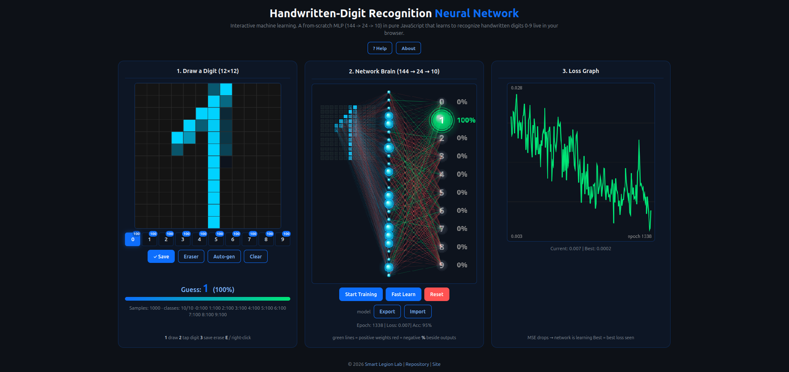
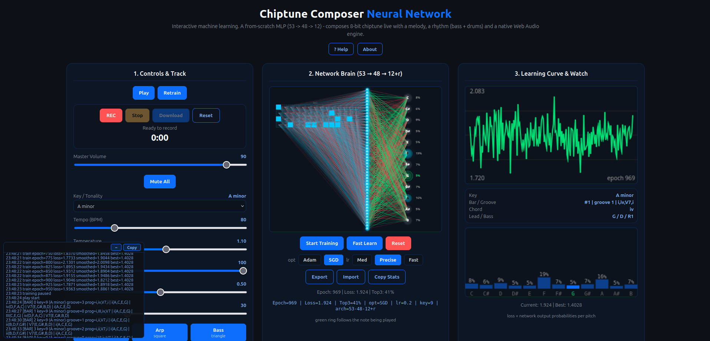
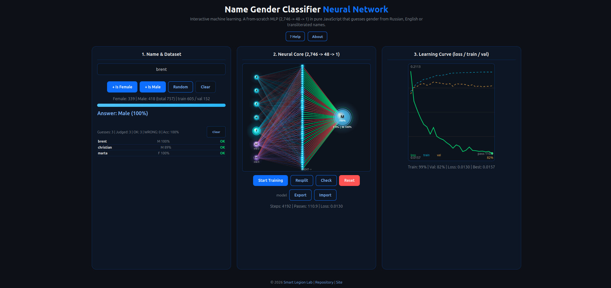
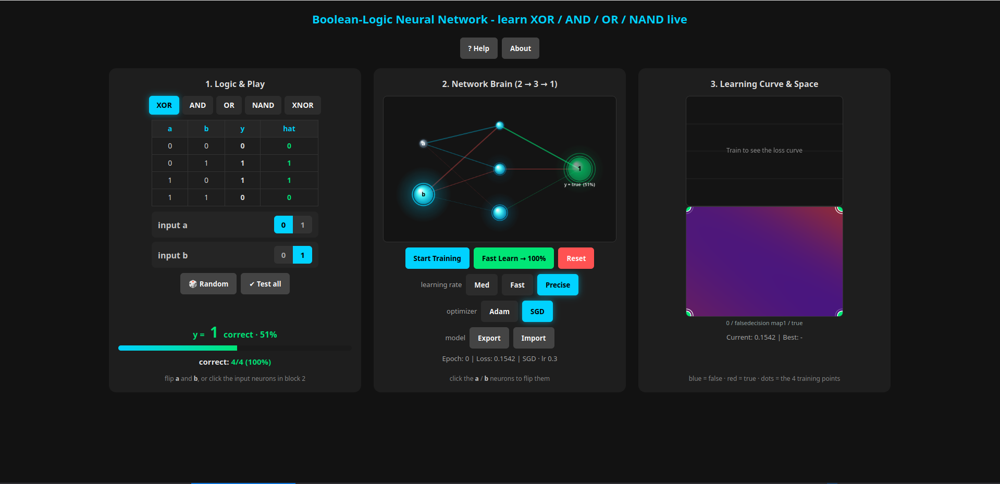
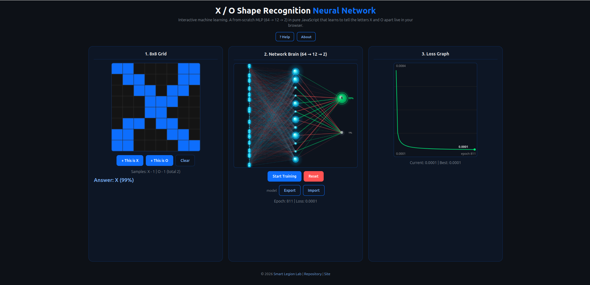
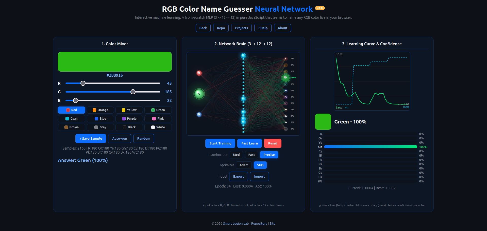
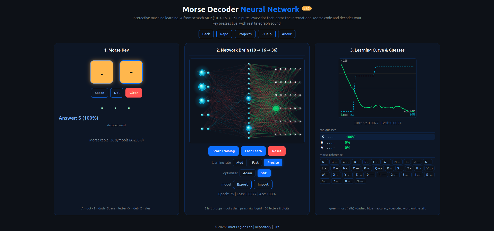

Handwritten-Digit Recognition

Draw digits on a 12×12 grid, add samples or auto-generate hand-style ones, and watch the net learn.
Real multilayer perceptrons implemented in pure JavaScript - no frameworks, no libraries. Train, watch the learning live, and export or import trained brains as JSON.

Draw digits on a 12×12 grid, add samples or auto-generate hand-style ones, and watch the net learn.

Compiles 8-bit chiptune live: the network predicts the melody and a per-bar rhythm groove for bass and drums, on a native Web Audio engine.

Guesses gender from Russian, English or transliterated names using sparse features and a 27-letter alphabet.

A tiny network that explains why a hidden layer is needed: a single-layer perceptron cannot learn XOR.

A minimal dense network that learns to distinguish X and O drawn on an 8×8 grid.

Mix R, G and B and the net names the color across 12 classes: red, orange, yellow, green, cyan, blue, purple, pink, brown, gray, black, white.

Learns the International Morse table and decodes your telegraph key presses live, with realistic dit and dah sounds synthesized in the browser.